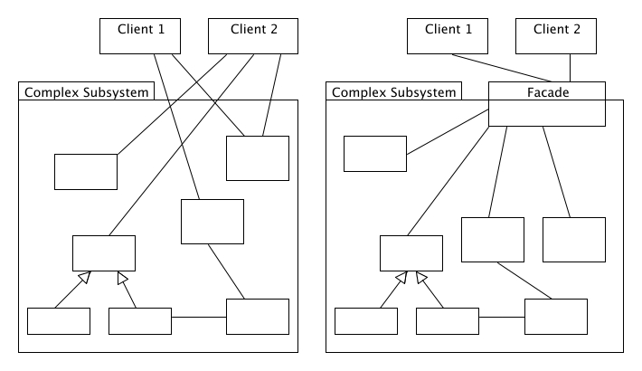

Facade
1. Usage
When sub-system very complex and has many subsystems it make sense to unify access to it by providing single interface called facade.
Facade isolate subsystems from direct calls and such way reducing dependency between modules and improve re-usability .
2. UML class diagram

3. Pros
- It helps to use subsystem as only single system call used to interact with many subsystems. Which in turn improve recompilation in case subsystem was modified.
- Complex system become layered - which improve usage and maintenance. Dependency between libraries reduced.
4. Cons
- You have to maintain Facade as sub-system will evolve.
- Overuse may introduce unnecessary layers.
5. Source code
//Program tested on Microsoft Visual Studio 2008 - Zahid Ghadialy
//Façade is part of Structural Patterns
//Structural Patterns deal with decoupling the interface and implementation of classes and objects
//A Facade is single class that represents an entire subsystem
//The example we consider here is a case of a customer applying for mortgage
//The bank has to go through various checks to see if Mortgage can be approved for the customer
//The facade class goes through all these checks and returns if the morgage is approved
#include<iostream>
#include<string>
using namespace std;
// Customer class
class Customer
{
public:
Customer (const string& name) : name_(name){}
const string& Name(void)
{
return name_;
}
private:
Customer(); //not allowed
string name_;
};
// The Subsystem ClassA class
class Bank
{
public:
bool HasSufficientSavings(Customer c, int amount)
{
cout << "Check bank for " <<c.Name()<<endl;
return true;
}
};
// The Subsystem ClassB class
class Credit
{
public:
bool HasGoodCredit(Customer c, int amount)
{
cout << "Check credit for " <<c.Name()<<endl;
return true;
}
};
// The Subsystem ClassC class
class Loan
{
public:
bool HasGoodCredit(Customer c, int amount)
{
cout << "Check loans for " <<c.Name()<<endl;
return true;
}
};
// The Facade class
class Mortgage
{
public:
bool IsEligible(Customer cust, int amount)
{
cout << cust.Name() << " applies for a loan for $" << amount <<endl;
bool eligible = true;
eligible = bank_.HasSufficientSavings(cust, amount);
if(eligible)
eligible = loan_.HasGoodCredit(cust, amount);
if(eligible)
eligible = credit_.HasGoodCredit(cust, amount);
return eligible;
}
private:
Bank bank_;
Loan loan_;
Credit credit_;
};
//The Main method
int main()
{
Mortgage mortgage;
Customer customer("Brad Pitt");
bool eligible = mortgage.IsEligible(customer, 1500000);
cout << "\n" << customer.Name() << " has been " << (eligible ? "Approved" : "Rejected") << endl;
return 0;
}
Available at IdeOne